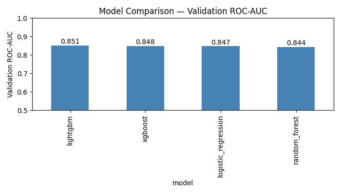
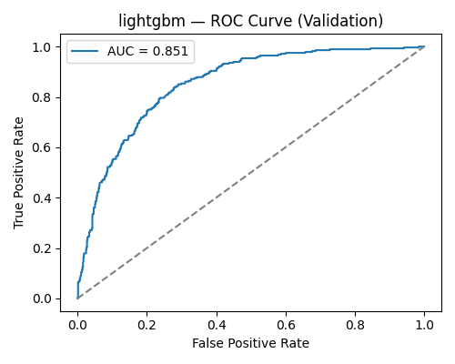
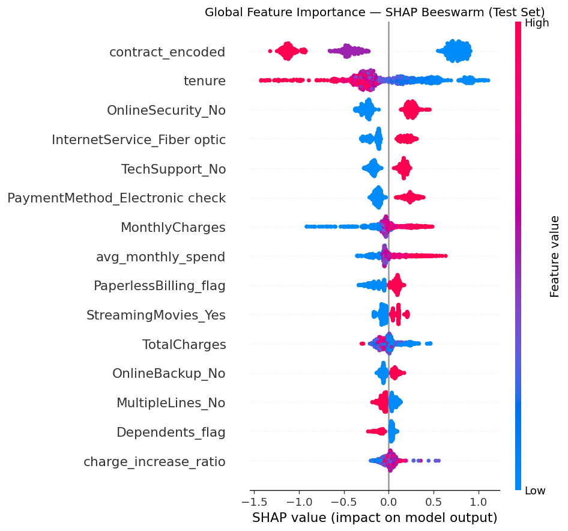
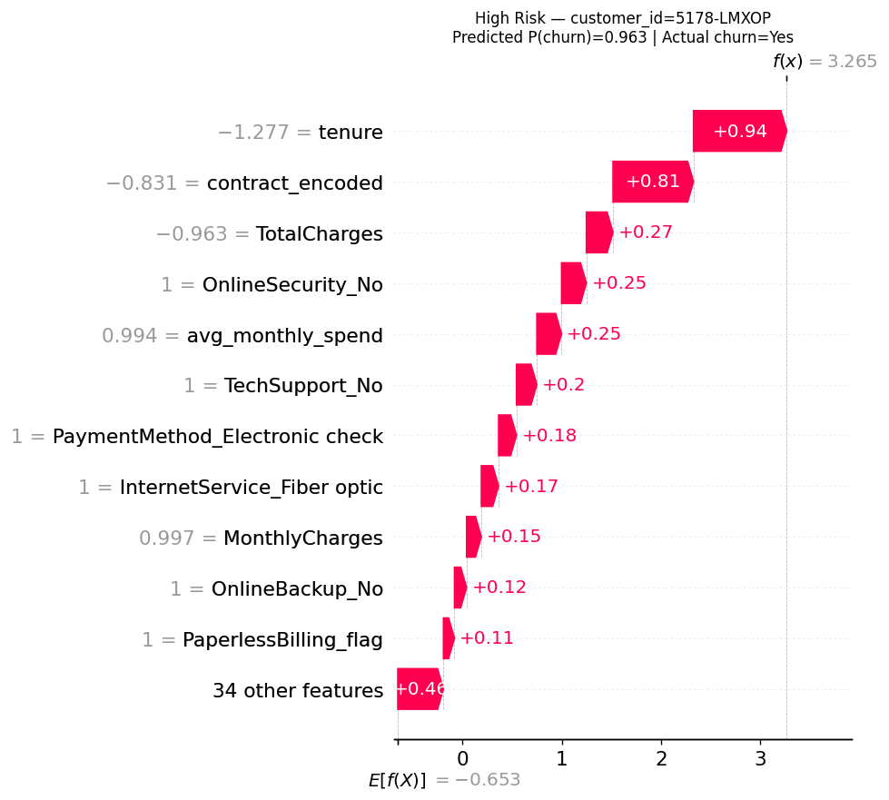
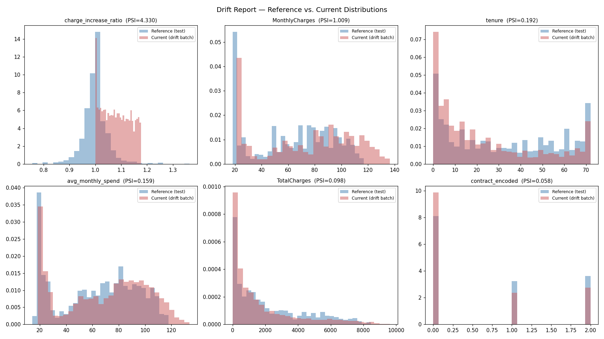

Not just a churn model — the full lifecycle around it: tracked experiments, a validation gate, explainability, drift monitoring, and an automatic retrain that actually proves itself before promotion.
The IBM Telco Churn dataset (7,043 customers, 26.5% churn rate) loaded via Delta Lake with schema and null-rate validation logged to MLflow for lineage. Five engineered features sit on top of the raw columns — tenure buckets, ordinal contract encoding, an add-on engagement count, and a charge-increase ratio that flags recent price hikes, a known churn trigger.
Four model families — Logistic Regression, Random Forest, XGBoost, LightGBM — each tuned via
RandomizedSearchCV (3-fold stratified CV, 20 iterations) and logged to MLflow with
full hyperparameters, metrics, and artifacts.

model_comparison_roc_auc.png
lightgbm_roc_curve.png
The best run is found by querying the MLflow experiment directly — not reused from an in-memory
variable — mirroring how a real promotion stage runs independently of training. Before promotion,
the model is scored on the held-out test set for the first and only time, gated at
test_roc_auc ≥ 0.80.
runs:/<run_id>/model URI as the champion reference, with identical
validation-gate and promotion logic.
TreeExplainer gives exact, signed, per-prediction contributions — not just
"tenure matters" but why a specific customer was flagged, and which direction each feature pushed.

shap_beeswarm_global.png
shap_waterfall_high_risk.pngA synthetic "six months later" scenario — a 15% price increase, a promo-driven younger tenure mix, and a shift toward month-to-month contracts — injected to test whether the monitoring pipeline actually catches it.
PSI correctly triggered an automatic retrain. v2 was trained on the combined original + drifted data:

drift_report.png
Reads the champion pointer fresh on every run — no code change needed after a retrain promotes
a new champion. Scores customers, assigns risk tiers, and appends to Delta with full lineage
(model_run_id, scored_at) for auditability. This notebook is the
scheduled job task, configured for a daily 6am run and currently paused.
7K rows fits comfortably in pandas; SHAP's mature tooling targets sklearn directly. Spark handles ingestion and feature engineering at scale instead.
Autolog is demoed for fast exploration, but the systematic comparison uses manual logging for consistent metric names and custom artifacts across model families.
Preserves the full, high-signal feature set for modeling while still exercising a genuine, working drift-detection and retrain pipeline.